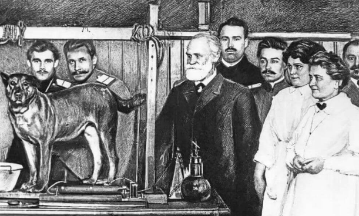
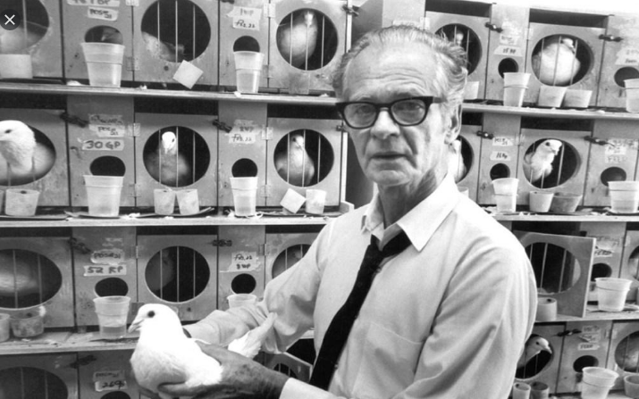
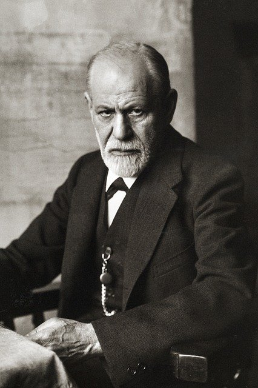

Principais teorias
Dentro da Psicologia existem diversas teorias que buscam entender o ser humano como um todo. Entretanto podemos destacar 3 principais teorias que inspiram as outras e enxergando as pessoa e os tratameentos de maneiras diferentes.
Behaviorismo ou comportamentalismo.
Essa teoria começa com o as teorias do Condicionamento clássico. Quando Ivan Pavlov (1849-1936) fez o teste com seu cão. Pavlov começou a tocar um sino antes de servir ração. Ele percebeu que depois de um tempo fazendo isso, o cão começou a salivar mesmo antes de ele colocar a ração. Pavlov chegou entao a conclusão de que todos temos um comportamento "inato" diante das situações, uma resposta direta. 
Avançando um pouco mais o cientista J. B. Watson ficou principalmente conhecido pela experiência com o bebe Albert. Ele e sua assistente colocaram o bebe para interagir com um rato. O experimento acabou se tornando muito polêmico, sendo visto como cruel. Alguns alegaaram que Watson induziu o Bebe ao medo. Entratanto Watson verificou que o bebê ficou com medo não só do rato mais com outros objetos peludos que se pareciam com um rato.
J. B. Skinner (1878-1958), e evoluiu a teoria dos seus "antecessores" e pensou no Condicionamento Operante. A partir de sua criação chamada de Caixa de Skinner ("Skinner-box") fez diversos experiemntos com pombos e ratos no qual elaborou suas teorias sobre estímulo resposta. E concluíu que alterando o ambiente pode-se alterar a resposta do indíviduo , ou seja, de forma indireta. Suas contribuições são enormes tanto para o estudo da socidade como um todo, mas também para área da educação. 
Psicanálise

Fenomenologia: Fenô para os íntimos. P.S.: Minha escolha!
O psicólogo, durante sua formação deve escolher dentre as teorias, a que mas faz sentido, aquele que ele se identifica mais. Para se apronfundar nos estudos e seguir no atendimento embasado pela teoria escolhida. E aqui que separamos os profissionais dos amadores. Brincadeiras à parte, a Fenô e minha escolha e portanto minha linha de atndimento.
Essa teoria bêbe direto da fonte da Filosofia. Passando por diversos filósofos, desde René Descartes até nomes mais "contemporâneos" como Heidegger, Sartre ,Merleau-Ponty e Husserl.
Para essa teoria, o paciênte, ou cliente(segundo Rógers) chega para o psicólogo dessa abordagem sempre do ponto de vista de um fenômeno. Ou seja, o profissional terá que trabalhar em sessão segundo o fênomno e todas as angústias relacionadas a ele, partindo da fala desse paciente. Sendo assim, o "histórico" do paciente e pouco relevante, pos o tratamento proposto vem sempre à partir dessa fala.